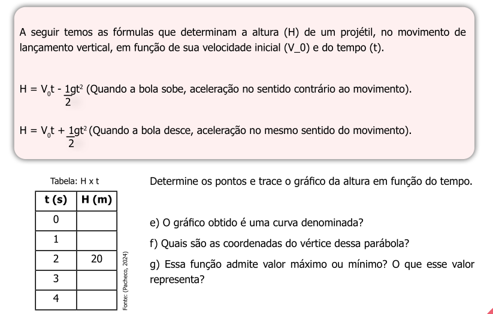
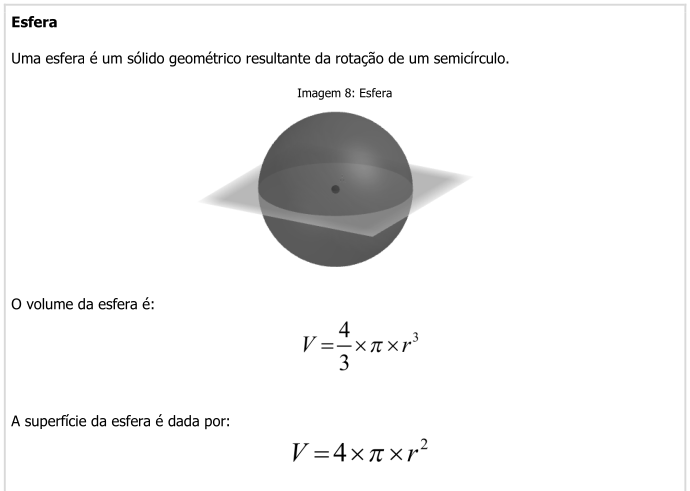

* Criando-se os dados ;
* Criando-se uma equação que vai gerar os dados ;
* Importando-se os dados (de uma planilha, por ex)Construindo gráficos interativos com plotly
Objetivos:
1. Compreender para que serve o “plotly” e seu potencial interativo para ensino e aprendizagem
2. Utilizar o “plotly” por scripts para a construção de gráficos interativos
3. Verificar a interatividade dos gráficos criados
A biblioteca
plotly é uma das mais ricas do R para gráficos interativos. Permite, entre outros, efeitos de zoom no gráfico, bem como de mouse over, em que a simples passagem do mouse sobre um elemento do gráfico abre as informações daquele ponto. Além disso, permite animações controladas pelo usário, a inseração de seletores, de controles deslizantes, menus e botões.
Complementarmente, por possibilitar uma integração a uma linguagem desses tempos chamada JavaScript, a biblioteca também é utilizada em alguns paineis de dados, como no Power Bi da Microsoft, uma coleção de aplicativos conectados para a visualização de dados. De fato, é a própria biblioteca
plotlyjs escrita em JavaScript, externa ao R e RStudio, que é incorporada ao R. A elaboração de gráficos pelo
plotly requer alguns comandos simples. E a boa notícia é que o gráfico produzido já “sai” apresentando interatividade, como ampliação/redução, deslocamento dos dados em eixos, e efeitos de informação por passagem do mouse, salvamento como imagem PNG, entre outros. Para construir um gráfico qualquer precisa-se de dados. Basicamente há 3 formas para se obter os dados:
Criando um gráfico interativo
Vamos começar criando os dados a partir de uma equação aplicada a um vetor. Para isso, precisamos…do vetor ! Visualize um vetor como se fosse uma coluna (ou linha) do Excel. No
R os vetores são criados por concatenação de valores separados por vírgula, tal como segue:x = c(1,2,3,4,5) # um vetor; o "c" indica "concatenação"
# atribui valores de 1 a 5 à variável "x"
# Alternativamente,
x = 1:5 # também atribui valores de 1 a 5 à variável "x" Para elaborar o gráfico interativo, ilustremos a equação de lançamento vertical abaixo.

Agora faremos um gráfico interativo a partir desses dados. Mas antes, claro, é necessário instalar o pacote
plotly no R. Você pode instalá-lo pela aba Packages do RStudio, se já não fez, e como explicado na seção anterior sobre Pacotes.
Etapa final… construir um gráfico de dispersão de pontos da função de ascensão vertical.
Para fazer isso, basta copiar o trecho abaixo e colá-lo num novo script
R. E executá-lo de qualquer das formas mencionadas em seção anterior (Um pouco sobre o uso do R).
# Dados:
t = 1:20 # define o vetor de tempo
Vo = 100 # velocidade inicial, 100 m/s
g = 9.8 # aceleração da gravidade, m/s^2
# Equação (ascensão vertical):
H = Vo*t-1/2*g*t^2
# Gráfico interativo:
library(plotly)
plot_ly(x = ~t, y = ~H)# Observação:
# Sintaxe do plotly: ~variável, para atribuir uma variável (x ou y)
# type: para atribuir um tipo de gráfico O
R costuma apresentar algumas mensagens (Warnings) após rodar os comandos. Não são erros, mas informações adicionais, tais como na reprodução do gráfico anterior. Nesse caso, a informação é que está faltando caracterizar o tipo de gráfico, um espalhamento de pontos (scatter) :plot_ly(x = t, y = H, type = 'scatter') Agora observe quanta interatividade surgiu com o simples comando acima, passando o mouse pelos pontos do gráfico, ou clicando-se nos ícones que apareceram acima do gráfico. Teste essa interatividade:
- Passando o mouse sobre os pontos do gráfico (hover) você obterá as coordenadas de cada ponto;
- Usando o botão de rolagem do mouse você amplia ou reduz o gráfico
- Clicando com o botão esquerdo do mouse em qualquer parte do gráfico e desenhando um retângulo você obterá uma ampliação da área;
- Se der dois cliques após a ampliação você retornará ao gráfico original;
- Posicionando o ponteiro do mouse entre os valores de um eixo, e arrastando o mouse, você verá um deslocamento do eixo selecionado;
- Selecionando um ícone no canto superior direito do gráfico, você poderá, na sequência a partir da esquerda, baixar o plot como imagem, realizar uma ampliação, deslocar os eixos, selecionar os pontos dentro de uma caixa, ou dentro de um laço, ampliar, reduzir, escalonar ao tamanho original, realinhar os eixos aos do plot original, observar as coordenadas (x e y), observar somente a coordenada y, e retornar ao início.
Salvando o gráfico
Agora uma característica bem interessante do
plotly: você pode salvar o gráfico mantendo toda a sua interatividade num arquivo HTML. Dessa forma qualquer pessoa será capaz de abrir seu gráfico em um browser de internet (Firefox, Chrome, Edge, por ex), o que lhe permitirá observar os detalhes e a ação interativa em qualquer computador, notebook, tablet ou smartphone !!! E pra salvar seu 1o. gráfico interativo é muito simples:
1. Após feito o gráfico, clique em "Export", logo acima do gráfico na aba `Plots`;
2. Clique em "Save As Web Page"
3. Escolher um nome pro gráfico e salvá-lo Agora basta localizar o arquivo em seu computador, abrir o arquivo automaticamente em um browser, e verificar que sua interatividade foi mantida. E para compartilhá-lo, se desejar, basta enviar o arquivo do gráfico interativo para alguém ou exibi-lo num projetor multimídia.
Trabalhando com relações matemáticas nas variáveis
Às vezes é interessante na construção de um gráfico que se permita executar um cálculo em uma variável, sem que com isso tenha que se elaborar um novo vetor. Vamos exemplificar isso para uma transformação isotérmica do estudo de gases (lei de Boyle-Mariotte), como segue:

Exemplificando, se você está trabalhando num planilha eletrônica (ex: Excel) e deseja construir um gráfico da relação acima, digamos V versus p, terá que montar uma coluna com essa operação. No
plotly, assim como no R como um todo, não precisa, já que p pode ser considerado como 1/V constante. De fato, essa constante é representada pela constante geral dos gases ideais, R, de valor conhecido. Resolvendo para a situação acima:
# Dados:
R = 8.314 # J/(mol*K), constante geral dos gases ideias
V = seq(0,22.4, length.out=50) # vetor de "Volume" (em litros), com 50 pontos
T = 298 # K, temperatura absoluta
# Equação
# pV = RT; p = RT/V
p = R*T/V
# Gráfico:
library(plotly)
plot_ly(x = V, y = ~R*T/V, type = 'scatter', mode='lines') Agora, se quiser nomear as etiquetas dos eixos e fornecer um título ao gráfico para apresentar melhor o significado físico das quantidades envolvidas, basta acrescentar o comando
layout, como segue:library(plotly)
library(magrittr) # biblioteca para o operador pipe "%>%"
plot_ly(x = V, y = ~R*T/V, type = 'scatter', mode='lines') %>%
layout(
title = "Transformação Isotérmica de um Gás",
xaxis = list(title = "Volume V, L"),
yaxis = list(title = "Pressão p, bar")
)Agora é com voce:
Abra um novo script e construa um gráfico que apresente uma relação qualquer entre variáveis, tal como sugerido abaixo:
- Crie os valores da variável independente (ex: x = 1:10);
- Carregue a biblioteca
plotly-library(plotly);
- Digite uma linha geral de comando pro gráfico:
plot_ly(x = ~x, y = ~sqrt(x), type = "scatter")
- Selecione essas linhas, dê um Ctrl+Enter, e observe a saída (ou seja, o gráfico, na aba
plots;
- Modifique a variável “y”, substituindo o valor de “x” por alguma outra relação, tal como:
~exp(x)- exponencial,~sin(10*x)- seno, ~sqrt(x)` - raiz quadrada;
Outros tipos de gráficos
Também é possível elaborar outros gráficos, como de linhas, barras, histograma, ou box-plot (“caixa de bigodes”). Algumas dessas possibilidades são ilustradas abaixo.

No
plotly há uma gama de gráficos possíveis. Experimente alguns tipos:# Linhas
library(plotly)
plot_ly(x = ~x, y = ~x, type = 'scatter', mode = 'lines')# Barras
library(plotly)
classes <- c("A", "B", "C", "D") # dados para o gráfico de barras
percentuais <- c(25, 35, 20, 20)
plot_ly(x = ~classes, y = ~percentuais, type = 'bar')library(plotly)
classes <- c("A", "B", "C", "D") # dados para o gráfico de barras
percentuais <- c(25, 35, 20, 20)
# Gráfico de torta
plot_ly(labels = classes, values = percentuais, type = 'pie')# Histograma
library(plotly)
x <- rnorm(1000) # comando pra gerar dados aleatórios no `R`
plot_ly(x = ~x, type = "histogram")# Boxplot
library(plotly)
x <- rnorm(50) # gera dados aleatórios
y <- rnorm(50, mean = 1) # gera a variação estatística nos dados
plot_ly(y = ~x, type = "box", name = 'Grupo 1') %>% # adiciona os dois box para os dados
add_trace(y = ~y, type = "box", name = 'Grupo 2') Também é possível combinar alguns tipos, como um gráfico de pontos e linhas:
# Pontos e linhas
library(plotly)
x <- 1:10
plot_ly(x = ~x, y = ~x^2, type = 'scatter', mode = 'markers, lines') # também dá se 'markers+lines'
Gráficos 3D
Para encerrar essa parte, gráficos tridimensionais ! A versão básica de um gráfico 3D é bem simples de se executar no
plotly, e seu efeito visual e de interatividade são bem expressivos ! Um exemplo de gráfico 3D pode ser obtido das relações de raio, área superficial, e volume de uma esfera, tal como segue.

Agora vamos elaborar o gráfico 3D interativo no
plotly. O mais simples seria com as etiquetas com os nomes padrão, x, y e z. Mas é melhor acrescentar o comando layout para dar significado físico e melhorar a interpretação do gráfico.library(plotly)
# Dados:
r = seq(0,100, length.out = 50)
AreaSup = 4*pi*r^2 # cálculo de área superficial da esfera
Volume = 4/3*pi*r^3 # cálculo do volume da esfera
# Gráfico:
library(plotly)
plot_ly(x = r, y = AreaSup, z = Volume,
mode= 'markers+lines')%>%
layout(scene = list(
xaxis=list(title="raio"),
yaxis=list(title="área superficial"),
zaxis=list(title="volume")))
Observe que o gráfico é interativo também sobre outros aspectos, como sua rotação em qualquer dos 3 eixos. Sob o ponto de vista de conteúdo, esse gráfico ilustra como que os valores de área superficial, e mais ainda de volume, são enormemente variados em função do raio de uma esfera. Isso também justifica em parte o grande sucesso do uso de nanopartículas em Ciência e Tecnologia nos dias atuais (alta área de superfície em tamanho reduzido).
Outro gráfico tridimensional interessante é o de superfície 3D. Como o de cima, poucas linhas são necessárias para defini-lo. A diferença é que você pode trabalhar com uma equação,para a superfície, veja:
x <- seq(-5, 5, length.out = 50)
y <- seq(-5, 5, length.out = 50)
z <- outer(x, y, function(x, y) x^2 - y^2) # equação x^2+y^2
plot_ly(x = ~x, y = ~y, z = ~z, type = 'surface') %>%
layout(title = "Gráfico de Superfície") Existem outros tipos de gráficos para o
plotly, pelo que vale uma visitinha ao website para mais informações.Plotly por comandos de mouse !!
Ainda que esse treinamento insista nas vantagens de se utilizar linhas de comando ao invés de cliques de mouse, não podemos nos furtar de apresentar uma solução desse tipo para quem prefere o uso do recurso. Entre alguns aplicativos online, destacamos o Plotly Chart Studio abaixo, que permite a construção de gráficos interativos variados com o pacote.

plotly, mas com uso de cliques de mouse ao invés de linhas de comando.